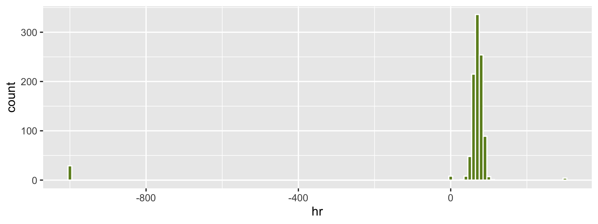
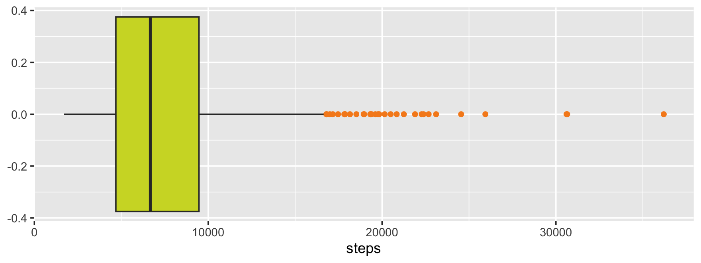
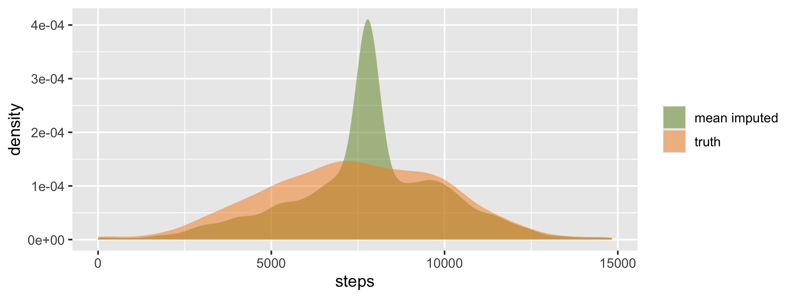
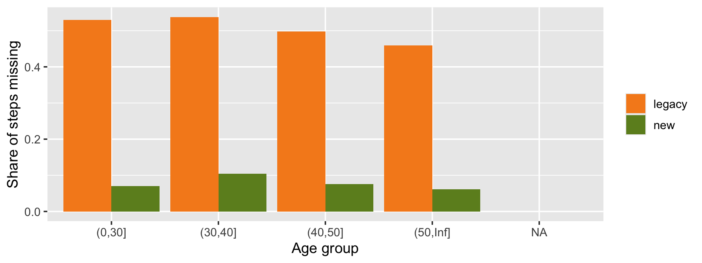
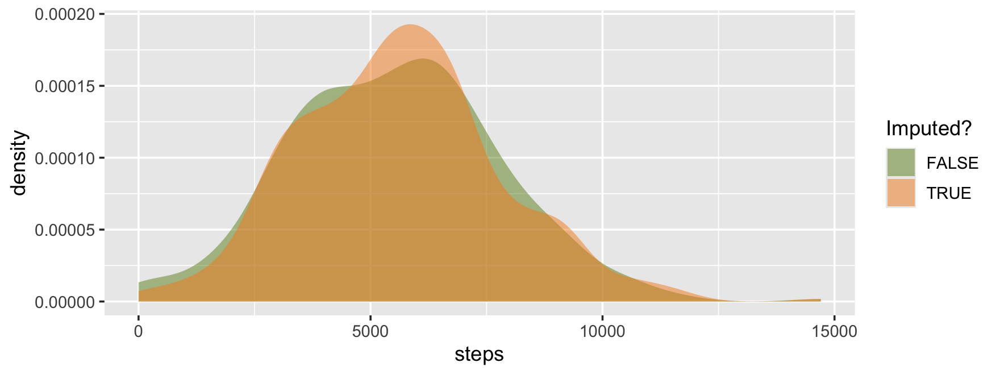

library(tidyverse)
library(lubridate)
vitals <- read_csv("data/s6_vitals.csv")
users <- read_csv("data/s6_users.csv")
steps_sim <- read_csv("data/s6_steps_sim.csv")1 How to use this handout
The slides move fast. This handout is the slow, complete version: read it before class, and return to it when you clean a column.
Session 6 is the second of two sessions on data cleaning. Session 5 covered text. Today covers dates, numbers, and holes: timestamps in many formats, numbers that secretly mean “nothing”, values that are impossible or merely unusual, rules a table must obey, and missing values.
The pattern from Session 5 continues: an AI assistant can make a column look complete or tidy in one line, and quietly damage it. Audit it boxes show these mistakes. The habit to keep is: flag first, fix second, and compare before and after.
The Audit Loop, for numbers and holes
- Read the code. What happens to the
NAvalues? To the extremes? - Run it, and compare the summary before and after (counts, mean, spread, group means).
- Restate what changed and who it changed for.
- Refine it or Reject it. Log the decision.
Setup. The examples use three small files, all on the course site in the data/ folder: s6_vitals.csv (heart rate and steps with sentinels), s6_users.csv (ten records that break known rules), and s6_steps_sim.csv (a simulation, where the true steps are known). You need tidyverse and lubridate (both come with, or alongside, the tidyverse install), and mice for the imputation section.
2 Dates and types
A column’s type decides what you can do with it. Text sorts alphabetically, not numerically or chronologically.
sort(c("10", "9", "100"))#> [1] "10" "100" "9"sort(c("2026-01-10", "2026-01-9", "2026-01-100"))#> [1] "2026-01-10" "2026-01-100" "2026-01-9"ISO dates (2026-01-05, year first, two-digit month and day) happen to sort correctly as text. Everything else does not. Dates should be stored as dates, so that you can sort, subtract, and group them.
2.1 One column, many formats
ts_raw <- c(
"2026-01-05 07:30",
"01/05/2026 7:30 AM",
"5 Jan 2026 07:30",
"2026-01-05T07:30:00Z",
"Jan 5, 2026",
"yesterday"
)
ts_raw#> [1] "2026-01-05 07:30" "01/05/2026 7:30 AM" "5 Jan 2026 07:30"
#> [4] "2026-01-05T07:30:00Z" "Jan 5, 2026" "yesterday"These might come from different devices, from different export tools, or from people typing. A single parsing function only understands the formats it was written for.
ymd_hms(ts_raw, quiet = TRUE)#> [1] NA NA NA
#> [4] "2026-01-05 07:30:00 UTC" NA NAsum(is.na(ymd_hms(ts_raw, quiet = TRUE)))#> [1] 5Five of six values became NA. There was no error. quiet = TRUE hides the warning, but even with the warning, a script that keeps going has silently discarded most of the column.
Audit it: a parser that loses most of the column
An AI may write mutate(ts = ymd_hms(ts_raw)), run it, and move on. After any parse, count the failures: sum(is.na(parsed)) - sum(is.na(original)) is the number of values the parser could not read. If it is more than a handful, the format list is incomplete.
2.2 Give it a list of orders
parse_date_time() takes several orders, each a pattern of date and time pieces: Y year, m month number, b month abbreviation, d day, H hour (24-hour), I hour (12-hour), M minute, p AM/PM, z time zone offset.
parsed <- parse_date_time(
ts_raw,
tz = "UTC",
quiet = TRUE,
orders = c("Ymd HM", "mdY IMp", "dbY HM", "YmdHMSz", "bdY")
)
tibble(ts_raw, parsed, ok = !is.na(parsed))#> # A tibble: 6 x 3
#> ts_raw parsed ok
#> <chr> <dttm> <lgl>
#> 1 2026-01-05 07:30 2026-01-05 07:30:00 TRUE
#> 2 01/05/2026 7:30 AM 2026-01-05 07:30:00 TRUE
#> 3 5 Jan 2026 07:30 2026-01-05 07:30:00 TRUE
#> 4 2026-01-05T07:30:00Z 2026-01-05 07:30:00 TRUE
#> 5 Jan 5, 2026 2026-01-05 00:00:00 TRUE
#> 6 yesterday NA FALSENow inspect what did not parse:
tibble(ts_raw, parsed) |> filter(is.na(parsed))#> # A tibble: 1 x 2
#> ts_raw parsed
#> <chr> <dttm>
#> 1 yesterday NA"yesterday" is not a date, and no list of orders should make it one. It stays NA and gets flagged. Never fill it in with a guess.
Notice also "Jan 5, 2026": it parsed, but with no time, so it became midnight (00:00:00). A missing time of day was turned into a specific time. Whether that matters depends on the analysis, so say it in your log.
2.3 The day-month trap
d <- c("01/05/2026", "13/05/2026", "05/05/2026", "02/11/2026")
a <- as.numeric(str_extract(d, "^\\d+"))
b <- as.numeric(str_extract(d, "(?<=/)\\d+"))
tibble(d, ambiguous = a <= 12 & b <= 12 & a != b)#> # A tibble: 4 x 2
#> d ambiguous
#> <chr> <lgl>
#> 1 01/05/2026 TRUE
#> 2 13/05/2026 FALSE
#> 3 05/05/2026 FALSE
#> 4 02/11/2026 TRUE01/05/2026 is January 5 in the US and May 1 in most other places. When both numbers are 12 or less, no code can tell. 13/05/2026 can only be day first, which is a clue that the source uses day first, but a single clue is not proof for the others.
mdy("01/05/2026")#> [1] "2026-01-05"dmy("01/05/2026")#> [1] "2026-05-01"The honest procedure:
- Count how many values are ambiguous.
- Look for a clue in the data (a value with a first number above 12, which proves the format).
- Ask the source which convention each device or system used, then set the order per source.
- If you cannot find out, leave the ambiguous rows
NAand flagged.
Audit it:
parse_date_time() picks one format for the whole column
If you list both "mdY" and "dmY", lubridate chooses the order that parses the most values in the vector, then applies it to all of them. One unambiguous day-first value such as 13/05/2026 is enough to make the whole column day first, and 01/05/2026 silently becomes May 1, even if it came from a device that writes month first.
x <- c("01/05/2026", "13/05/2026")
parse_date_time(x, orders = c("mdY", "dmY"), quiet = TRUE)#> [1] "2026-05-01 UTC" "2026-05-13 UTC"Every value parses and nothing warns you. Parse one source at a time, list only the orders you have evidence for, and keep the ambiguous rows flagged.
2.4 Time zones
t <- ymd_hms("2026-01-05 07:30:00", tz = "America/Los_Angeles")
t#> [1] "2026-01-05 07:30:00 PST"with_tz(t, "UTC")#> [1] "2026-01-05 15:30:00 UTC"force_tz(t, "UTC")#> [1] "2026-01-05 07:30:00 UTC"with_tz()keeps the instant and changes how it is displayed.force_tz()keeps the clock reading and changes the zone, which moves the instant. It is for repairing a timestamp that was labeled with the wrong zone.
Mixing them up shifts data by hours. A good default is to store UTC, and convert only for display.
3 Sentinels and missing markers
3.1 Four kinds of “nothing”
| Looks like | What it is |
|---|---|
NA |
R’s missing value |
NaN |
“not a number”, the result of 0/0 |
"", "n/a", "NULL" |
text pretending to be a value |
-999, -1, 9999 |
a sentinel: a number that means “no data” |
NULL is a different thing: it means “no object at all”, and it cannot be an element of a data frame column.
x <- c(1, NA, 0 / 0)
is.na(x)#> [1] FALSE TRUE TRUEis.nan(x)#> [1] FALSE FALSE TRUEis.na() is TRUE for both NA and NaN. is.nan() is TRUE only for NaN.
3.2 A sentinel ruins a summary
summary(vitals$hr)#> Min. 1st Qu. Median Mean 3rd Qu. Max.
#> -999.0 64.0 72.0 41.2 79.0 300.0The mean heart rate is about 41. A heart that slow does not exist. The -999 values pulled the mean down, and nothing errored.
3.3 Find them: look at the extremes
vitals |>
filter(hr < 30 | hr > 220) |>
count(hr, sort = TRUE)#> # A tibble: 3 x 2
#> hr n
#> <dbl> <int>
#> 1 -999 29
#> 2 0 8
#> 3 300 4Three different things share this table: -999 (a sentinel, repeated many times), 0 (impossible, and possibly a failed reading), and 300 (impossible, and possibly a typo). Repetition of one odd value is the signature of a code. A sentinel is a decision someone made when the data was recorded.
A histogram helps too, because a sentinel shows up as an isolated spike far from everything else.
ggplot(vitals, aes(x = hr)) +
geom_histogram(binwidth = 10, fill = "#6d8d24", color = "white")
3.4 Turn sentinels into NA
vit_na <- vitals |> mutate(hr = na_if(hr, -999), steps = na_if(steps, -1))
colSums(is.na(vit_na))#> hr steps
#> 29 25When you read a file, you can name the sentinels up front:
read_csv("vitals.csv", na = c("", "NA", "n/a", "-999"))
The data dictionary decides
Is -1 a sentinel? In a steps column, yes: nobody walks negative steps. In a temperature column, -1 is a real reading. A pattern cannot tell the difference, and neither can an AI. Check the data dictionary (or ask the source), and write the sentinel list into your code as a decision.
Audit it:
filter() deletes the rows, na_if() keeps them
An AI may “remove the bad values” with filter(hr != -999). That deletes entire rows, including their steps, their user, and their timestamp. It also loses the record that the value was missing. Use na_if() (or mutate()) to blank only the bad cell, and keep the row.
4 Bounds and outliers
Separate two questions. Can this value exist at all? That is a domain rule. Is it far from the others? That is a statistical question. They get different actions.
| Question | Tool |
|---|---|
| Can this value exist at all? | Domain bound (a rule you know) |
| Is it far from the rest? | z-score or IQR rule |
| Is it odd only in combination? | Derived feature or distance |
A heart rate of 300 is impossible. A heart rate of 125 is unusual but possible.
4.1 Domain bounds: flag, do not delete
vit <- vit_na |>
mutate(
hr_flag = case_when(
is.na(hr) ~ "missing",
between(hr, 30, 220) ~ "ok",
.default = "impossible"
)
)
count(vit, hr_flag)#> # A tibble: 3 x 2
#> hr_flag n
#> <chr> <int>
#> 1 impossible 12
#> 2 missing 29
#> 3 ok 959Two details matter here. The order of case_when() conditions matters: the is.na() test must come first, because between(NA, 30, 220) is NA, not FALSE, and a row with an NA condition falls through to .default. And the row is kept with a flag: a later step decides what to do with "impossible" rows.
c(raw_mean = mean(vitals$hr), clean_mean = mean(vit$hr[vit$hr_flag == "ok"]))#> raw_mean clean_mean
#> 41.20000 71.91971The raw mean was off by about 30 beats per minute, from sentinels alone.
4.2 z-scores
\[z = \frac{x - \bar{x}}{s}\]
A z-score says how many standard deviations a value is from the mean. For roughly bell-shaped data, about 95% of values fall within 2 and about 99.7% within 3 (the 68-95-99.7 rule), so only about 0.3% are beyond \(|z| > 3\).
hr_ok <- vit |> filter(hr_flag == "ok")
c(
n = nrow(hr_ok),
expected_beyond_3 = round(0.0027 * nrow(hr_ok), 1),
found = sum(abs(zs(hr_ok$hr)) > 3)
)#> n expected_beyond_3 found
#> 959.0 2.6 5.0The count is close to what a bell curve gives, so nothing here is alarming. A z-score cutoff has to be read against the amount of data: with a million rows you expect about 2,700 values beyond 3.
4.3 The IQR rule
The interquartile range (IQR) is the distance between the 25th and 75th percentiles. A value is flagged if it is more than \(1.5 \times \text{IQR}\) below the first quartile or above the third. This is the rule boxplots use for their individual points.
steps_ok <- vit |> filter(!is.na(steps))
ggplot(steps_ok, aes(x = steps)) +
geom_boxplot(fill = "#cfd82d", outlier.color = "#f68b1f")
4.4 z or IQR? It depends on the shape
tibble(
variable = c("hr (bell-shaped)", "steps (skewed)"),
z_beyond_3 = c(
sum(abs(zs(hr_ok$hr)) > 3),
sum(abs(zs(steps_ok$steps)) > 3)
),
iqr_rule = c(sum(iqr_flag(hr_ok$hr)), sum(iqr_flag(steps_ok$steps))),
n = c(nrow(hr_ok), nrow(steps_ok))
)#> # A tibble: 2 x 4
#> variable z_beyond_3 iqr_rule n
#> <chr> <int> <int> <int>
#> 1 hr (bell-shaped) 5 8 959
#> 2 steps (skewed) 14 32 975Steps are skewed: a few very active days stretch a long tail on the right. Both rules flag many of those days, and the IQR rule flags more, but these days are not errors. A z-score assumes a roughly symmetric, bell-shaped variable. For skewed data, look at the plot, and consider transforming (for example, with log()) before applying a rule.
Audit it: “remove outliers” deletes the interesting data
An AI asked to “remove outliers” will often write filter(abs(zs(x)) < 3). On a skewed variable like steps, that removes the long tail of legitimately active users. On a bell-shaped variable, it removes about 0.3% at random. Either way, it makes the column look tidier than reality, and it changes every later summary. Flag instead, then decide for each flagged value: impossible, or merely extreme?
4.5 Look in context
For each flagged value, ask three questions.
- Impossible? A domain bound says so, and the value is an error: flag it, and decide whether to blank it.
- Plausible but extreme? Keep it. It may be your most informative data.
- Repeated? The same odd value many times points to a code or a default, not to a person.
Outliers are questions, not verdicts.
4.6 Odd only in combination
Some values look normal in every column and are impossible together. We simulate height and weight, which move together, and add one record.
set.seed(7)
hw <- tibble(h = round(rnorm(500, 170, 9))) |>
mutate(w = round(70 + 0.9 * (h - 170) + rnorm(500, 0, 9)))
hw <- bind_rows(hw, tibble(h = 190, w = 45)) |>
mutate(
id = row_number(),
zh = zs(h),
zw = zs(w),
bmi = w / (h / 100)^2,
zb = zs(bmi),
md = mahalanobis(cbind(h, w), colMeans(cbind(h, w)), cov(cbind(h, w)))
)
hw |> filter(id == 501) |> select(h, w, zh, zw, bmi, zb)#> # A tibble: 1 x 6
#> h w zh zw bmi zb
#> <dbl> <dbl> <dbl> <dbl> <dbl> <dbl>
#> 1 190 45 2.17 -2.07 12.5 -3.73A height of 190 cm and a weight of 45 kg each have \(|z| < 3\). Together they give a BMI of about 12.5, far below the normal range. A derived feature (here, BMI) catches what each column alone cannot.
hw |> filter(abs(zb) > 3) |> select(id, h, w, bmi, zb)#> # A tibble: 4 x 5
#> id h w bmi zb
#> <int> <dbl> <dbl> <dbl> <dbl>
#> 1 252 143 30 14.7 -3.02
#> 2 353 158 36 14.4 -3.10
#> 3 449 168 95 33.7 3.14
#> 4 501 190 45 12.5 -3.73Row 501 is the most extreme, and other rows appear too: with 501 records, a few are expected beyond \(|z| > 3\). Flagged rows are candidates for a look, not automatic errors.
4.7 Mahalanobis distance (optional)
One distance can summarize several variables at once, accounting for how they move together:
\[D^2 = (x - \mu)^\top \Sigma^{-1} (x - \mu)\]
For roughly multivariate normal data, \(D^2\) follows a \(\chi^2\) distribution with as many degrees of freedom as variables, which gives a cutoff.
cutoff <- qchisq(.999, df = 2)
round(cutoff, 1)#> [1] 13.8hw |> filter(md > cutoff) |> select(id, h, w, md)#> # A tibble: 1 x 4
#> id h w md
#> <int> <dbl> <dbl> <dbl>
#> 1 501 190 45 27.7Only the planted record is flagged. This distance assumes roughly normal data, so use it as a screen rather than a test.
5 Validity rules
5.1 Dimensions of data quality
| Dimension | The question |
|---|---|
| Validity | Does the data follow its defined rules? |
| Accuracy | Is it close to the true value? |
| Consistency | Does it agree with itself and with other tables? |
| Uniformity | Same units and same format throughout? |
| Completeness | Is everything we need present? |
A value can be valid and still wrong: 120 is a valid heart rate, and it may still be false for that person. Validity is checkable by code. Accuracy usually is not.
5.2 Validity rules you can write as code
| Rule type | Example |
|---|---|
| Data type | age is numeric |
| Range | age between 0 and 120 |
| Mandatory | id is never NA |
| Unique | id appears once |
| Set membership | device is watch, band, or ring |
| Foreign key | every device_id exists in the device table (anti_join()) |
| Pattern | zip is exactly five digits |
| Cross-field | end is not before start |
5.3 Rules become counts
Here are the ten users records. Each of the checks below should find something.
users#> # A tibble: 10 x 6
#> id age device zip start end
#> <dbl> <dbl> <chr> <chr> <date> <date>
#> 1 1 34 watch 97201 2026-01-01 2026-01-06
#> 2 2 29 band 9720 2026-01-02 2026-01-01
#> 3 3 151 ring 97214 2026-01-03 2026-01-05
#> 4 3 45 watch 97201 2026-01-04 2026-01-03
#> 5 5 -2 Watch 97201-1234 2026-01-05 2026-01-10
#> 6 6 38 band 97005 2026-01-06 2026-01-10
#> 7 7 52 ring 97006 2026-01-07 2026-01-06
#> 8 8 NA watch 97201 2026-01-08 2026-01-11
#> 9 NA 41 band <NA> 2026-01-09 2026-01-13
#> # i 1 more rowusers |>
summarize(
id_missing = sum(is.na(id)),
id_duplicated = sum(duplicated(id[!is.na(id)])),
age_range = sum(!between(age, 0, 120), na.rm = TRUE),
device_set = sum(!device %in% c("watch", "band", "ring")),
zip_pattern = sum(!str_detect(zip, "^\\d{5}$"), na.rm = TRUE),
end_before_start = sum(end < start)
) |>
pivot_longer(everything(), names_to = "rule", values_to = "failing")#> # A tibble: 6 x 2
#> rule failing
#> <chr> <int>
#> 1 id_missing 1
#> 2 id_duplicated 1
#> 3 age_range 2
#> 4 device_set 2
#> 5 zip_pattern 2
#> 6 end_before_start 4A table of failing counts is a report you can rerun on every new file. Notice the decisions inside it:
NAage: not out of range. It is missing, which is a different problem. That is whyna.rm = TRUE, and why completeness is its own rule.- Duplicated
id: the count above is the number of extra copies (1). Counting both copies would give 2. Pick one, and say which. "Watch": invalid by the rule. You could case-fold first (Session 5) and flag the repair, or flag it as is.97201-1234: malformed under a five-digit rule, but a valid ZIP+4. Either the rule or the value is wrong, and the data owner decides.
Audit it: a validation function that changes the data
A rule checker should only report. An AI may return a function that also drops the failing rows, fixes the value, or fills it in “to be helpful”. Then the check and the cleaning are fused, and you cannot tell what was changed. Ask for a function that returns a table of rules and counts, and verify that nrow() and the values of the input are unchanged afterwards.
5.4 Unit tests for cleaning code
testthat turns a rule into a test that stops the script when the data breaks it.
library(testthat)
test_that("heart rate is in range after cleaning", {
expect_true(all(between(clean$hr, 30, 220), na.rm = TRUE))
expect_equal(sum(clean$hr == -999, na.rm = TRUE), 0)
})Run the tests after every cleaning step, and again on every new file. A failing test is cheaper than a wrong model.
6 Missingness
6.1 Why is it missing?
| Type | Meaning | Example |
|---|---|---|
| Structural | The value cannot exist | “Last pregnancy date” for a man |
| MCAR (missing completely at random) | Unrelated to anything | A random sync failure |
| MAR (missing at random) | Related to other columns | Old devices drop steps more often |
| MNAR (missing not at random) | Related to the missing value itself | Heart rate drops out when it is high |
MCAR is rare in real data. MAR and MNAR are the usual cases, and what is safe to do depends on which one you have. (A better name for MAR would be “conditionally at random”: the missingness is random given the other columns.)
6.2 Diagnose: is missingness the same everywhere?
The method is to make a missingness indicator (TRUE when the value is missing) and compare it across groups.
steps_sim |>
summarize(missing = mean(is.na(steps)), n = n(), .by = device)#> # A tibble: 2 x 3
#> device missing n
#> <chr> <dbl> <int>
#> 1 new 0.0798 1203
#> 2 legacy 0.512 797Legacy devices lose about half of their steps, new devices about 8%. That is not random.
steps_sim |>
mutate(age_group = cut(age, c(0, 30, 40, 50, Inf))) |>
summarize(missing = mean(is.na(steps)), n = n(), .by = age_group) |>
arrange(age_group)#> # A tibble: 5 x 3
#> age_group missing n
#> <fct> <dbl> <int>
#> 1 (0,30] 0.238 407
#> 2 (30,40] 0.295 631
#> 3 (40,50] 0.253 593
#> 4 (50,Inf] 0.193 368
#> 5 <NA> 0 1By age, the rate is about the same in every group: age is not what drives it here. Comparing groups tells you where to look, and where not to.
Describe, do not prove
A pattern across observed columns can support MAR (missing depends on device). It can never prove MCAR, because you cannot see whether the missing values themselves are different. And it cannot reveal MNAR at all.
6.3 What dropping the rows does
steps_sim |>
summarize(
all_rows = mean(device == "legacy"),
complete_rows = mean(device[!is.na(steps)] == "legacy")
)#> # A tibble: 1 x 2
#> all_rows complete_rows
#> <dbl> <dbl>
#> 1 0.398 0.260Legacy devices are about 40% of the users but only about 26% of the complete rows. Dropping rows with NA removes legacy users first, so any model then learns mostly from new-device users. This is a fairness-relevant effect: the people with older devices (often older, or lower income) are quietly underrepresented.
6.4 MNAR leaves no trace
If heart rate goes missing because it was high (the sensor fails during intense exercise, say), no other column shows it. The data that would reveal it is exactly the data that is missing. Only context can raise the suspicion. What you can do:
- ask the source how the sensor behaves,
- compare with another source of the same quantity,
- run a sensitivity analysis: re-do the analysis under several assumptions about the missing values and see how much the answer changes.
# naniar (optional) gives ready-made missingness plots
library(naniar)
gg_miss_var(steps_sim) # missing values per column
vis_miss(steps_sim) # every cell: present or missing7 Imputation
7.1 Options, and the rule of thumb
| Option | When it is reasonable |
|---|---|
| Drop rows | Few are missing (under about 5 to 10%) and the cause looks random |
| Drop the variable | Mostly missing, and little value |
| Impute | MAR, and the variable matters |
| Declare unusable | Too much is missing, or MNAR with no way to check |
Percentages like 5 to 10% are rules of thumb, not laws: what matters is who is missing, not only how many. And never impute the label or the outcome you want to predict: that feeds your own guess back in as if it were data.
7.2 Mean imputation: the tempting one
mean_imp <- steps_sim |>
mutate(steps = if_else(is.na(steps), mean(steps, na.rm = TRUE), steps))
c(true_sd = sd(steps_sim$steps_true), after_mean_imp = sd(mean_imp$steps))#> true_sd after_mean_imp
#> 2564.128 2193.206The mean of the column stays where it was, which looks reassuring and proves nothing, because filling with the mean keeps the mean by construction. The spread shrinks: a quarter of the column now holds one repeated value.
bind_rows(
truth = steps_sim |> transmute(steps = steps_true),
`mean imputed` = mean_imp |> select(steps),
.id = "version"
) |>
ggplot(aes(x = steps, fill = version)) +
geom_density(alpha = 0.5, color = NA) +
scale_fill_manual(values = c("#6d8d24", "#f68b1f"), name = NULL)
The mean-imputed version has a spike at the center and thin tails. Intervals computed from it will be too narrow, and correlations too weak.
7.3 Multiple imputation with mice
mice (multivariate imputation by chained equations) creates several completed datasets, to carry the uncertainty of not knowing the missing values.
library(mice)
dat <- steps_sim |>
select(steps, device, age) |>
mutate(device = factor(device))
imp <- mice(
dat,
m = 5,
method = "pmm",
donors = 20,
printFlag = FALSE,
seed = 531
)m = 5: five completed datasets.method = "pmm"(predictive mean matching): each hole is filled with an observed value taken from a row with a similar prediction, so imputed values are always realistic values.donors = 20: how many similar rows to draw from. A small donor pool can reuse a few rows over and over.seed: so you get the same answer when you rerun.
Then analyze each dataset and pool the results. For a simple summary, average across the datasets. For a model, mice pools for you:
fit <- with(imp, lm(steps ~ device + age))
summary(pool(fit))#> term estimate std.error statistic df p.value
#> 1 (Intercept) 8094.8690 200.819735 40.30913 38.48911 4.307036e-33
#> 2 devicenew 3015.5652 115.636787 26.07791 30.31960 2.517706e-22
#> 3 age -62.4752 4.225107 -14.78665 91.19317 5.954934e-26pool() combines the five fits using Rubin’s rules, so the standard errors reflect both the usual sampling error and the extra uncertainty from imputation.
7.4 Judge it by the distribution
In this simulation we know the true steps, so we can score each method.
stats <- \(x) c(mean = mean(x), sd = sd(x))
pooled <- sapply(1:5, \(i) stats(complete(imp, i)$steps))
rbind(
truth = stats(steps_sim$steps_true),
`drop rows` = stats(na.omit(steps_sim$steps)),
`mean imputed` = stats(mean_imp$steps),
`mice (pooled)` = rowMeans(pooled)
) |>
round()#> mean sd
#> truth 7419 2564
#> drop rows 7791 2536
#> mean imputed 7791 2193
#> mice (pooled) 7404 2604Dropping rows overstates the mean (the legacy users, who walk less, are missing most). Mean imputation keeps that biased mean and shrinks the spread. mice recovers both.
By group:
by_device <- function(d, nm) {
d |> summarize(mean = mean(steps), .by = device) |> mutate(version = nm)
}
bind_rows(
by_device(steps_sim |> mutate(steps = steps_true), "truth"),
by_device(steps_sim |> filter(!is.na(steps)), "drop rows"),
by_device(mean_imp, "mean imputed"),
by_device(
complete(imp, 1) |> as_tibble() |> mutate(device = as.character(device)),
"mice (1 of 5)"
)
) |>
pivot_wider(names_from = device, values_from = mean) |>
mutate(across(c(legacy, new), round))#> # A tibble: 4 x 3
#> version new legacy
#> <chr> <dbl> <dbl>
#> 1 truth 8573 5676
#> 2 drop rows 8587 5527
#> 3 mean imputed 8523 6686
#> 4 mice (1 of 5) 8594 5575Mean imputation gives legacy users the overall average, which is far above what they actually walk, and pulls the two groups toward each other.
With real data there is no truth column
Here we scored against steps_true. Real data never has it. What you can do instead:
- Compare the distribution before and after imputation (same shape, same spread?).
- Compare group means before and after: does any group move a lot?
- Compare imputed values with observed ones: are they plausible for that group?
- Run the analysis on several imputed datasets: does the answer change a lot between them?
You can never check a single imputed value against the truth. You can check whether the distribution recovered.
Audit it: a complete column is not a correct column
An AI asked to “fill in the missing steps so the column is complete” returned this:
steps_sim |>
mutate(steps = if_else(is.na(steps), mean(steps, na.rm = TRUE), steps)) |>
summarize(mean = mean(steps), sd = sd(steps), missing = sum(is.na(steps)))#> # A tibble: 1 x 3
#> mean sd missing
#> <dbl> <dbl> <int>
#> 1 7791. 2193. 0and then wrote: “No missing values remain, and the mean is unchanged, so no bias was introduced.” Apply the Audit Loop:
- “The mean is unchanged” is guaranteed by the method, so it proves nothing. And that mean is already biased: legacy users, who walk less, are under-represented among the observed values.
- The spread shrinks (the standard deviation falls well below the true one), so later intervals will be too narrow.
- Legacy users are filled with the average of mostly new-device users.
- The claim sounds like a check, but it is not one.
A better prompt: “Steps are missing more often for legacy devices. Use mice with device and age as predictors, five imputations, pmm. Then compare the mean and standard deviation of steps, overall and by device, before and after, and report any group whose mean moves by more than 5%.”
8 Assessing what comes back
Whatever the AI returns for a cleaning task, apply the Audit Loop, plus these checks.
- Count before, count after: rows,
NAvalues, distinct values, and the summary (mean, spread) of each touched column. - Who did it change? Compare group means and group sizes before and after. The people with the most missing data are rarely a random sample.
- Is the claim a check? A statement like “the mean is unchanged” or “no missing values remain” may be true by construction. Ask what could have made it false.
- Did it only report, or also change? A check should not modify the data.
9 Practice problems
Try each one before opening the solution.
1. Parse and count. Parse c("2026-03-01 08:15", "03/02/2026 9:00 PM", "Mar 3, 2026", "tomorrow") with a list of orders. How many failed, and which?
Solution 1
x <- c("2026-03-01 08:15", "03/02/2026 9:00 PM", "Mar 3, 2026", "tomorrow")
p <- parse_date_time(
x,
tz = "UTC",
quiet = TRUE,
orders = c("Ymd HM", "mdY IMp", "bdY")
)
tibble(x, p)#> # A tibble: 4 x 2
#> x p
#> <chr> <dttm>
#> 1 2026-03-01 08:15 2026-03-01 08:15:00
#> 2 03/02/2026 9:00 PM 2026-03-02 21:00:00
#> 3 Mar 3, 2026 2026-03-03 00:00:00
#> 4 tomorrow NAsum(is.na(p))#> [1] 1One failure, "tomorrow". Note that 03/02/2026 was read month first (March 2) because that was the only numeric order listed: that is a decision, and it needs evidence from the source.
2. A sentinel. For x <- c(5, -1, 7, -1, 9), where -1 is a sentinel, compute the mean before and after na_if(x, -1). Why is the second one NA unless you say something?
Solution 2
x <- c(5, -1, 7, -1, 9)
mean(x)#> [1] 3.8mean(na_if(x, -1))#> [1] NAmean(na_if(x, -1), na.rm = TRUE)#> [1] 7Once the sentinel is NA, mean() returns NA, because R refuses to guess. na.rm = TRUE is a decision to ignore the missing values: it is fine, but say how many you ignored (here, 2 of 5).
3. Flag, do not delete. In users, create age_flag with values "missing", "ok", and "impossible" (valid ages are 0 to 120). How many of each?
Solution 3
users |>
mutate(
age_flag = case_when(
is.na(age) ~ "missing",
between(age, 0, 120) ~ "ok",
.default = "impossible"
)
) |>
count(age_flag)#> # A tibble: 3 x 2
#> age_flag n
#> <chr> <int>
#> 1 impossible 2
#> 2 missing 1
#> 3 ok 7The is.na() condition comes first, otherwise the NA age falls through to "impossible".
4. z or IQR. Simulate y <- rlnorm(1000) (a skewed variable, with set.seed(1) first). How many values does each rule flag? Which would you trust, and why?
Solution 4
set.seed(1)
y <- rlnorm(1000)
c(z_beyond_3 = sum(abs(zs(y)) > 3), iqr_rule = sum(iqr_flag(y)))#> z_beyond_3 iqr_rule
#> 17 82Both flag the long right tail, and the IQR rule flags many more. Neither is “right”: the data is skewed, not wrong. Plot it, and consider log(y) before applying a rule.
5. A new rule. Add a rule to the users check that counts ZIP codes that do not start with 97. How many fail, and what do you do about NA?
Solution 5
users |>
summarize(
zip_not_97 = sum(!str_starts(zip, "97"), na.rm = TRUE),
zip_missing = sum(is.na(zip))
)#> # A tibble: 1 x 2
#> zip_not_97 zip_missing
#> <int> <int>
#> 1 0 1No ZIP fails this rule (all non-missing ones start with 97), and one is missing. Report the missing one under completeness, not under this rule. Whether 97 is a valid requirement at all is a question for the data owner.
6. Diagnose. In steps_sim, is missingness in steps related to age? To device? Show it with a table or a plot.
Solution 6
steps_sim |>
mutate(
age_group = cut(age, c(0, 30, 40, 50, Inf)),
missing = is.na(steps)
) |>
summarize(rate = mean(missing), .by = c(device, age_group)) |>
ggplot(aes(x = age_group, y = rate, fill = device)) +
geom_col(position = "dodge") +
scale_fill_manual(values = c("#f68b1f", "#6d8d24"), name = NULL) +
labs(x = "Age group", y = "Share of steps missing")
The rate depends on device (high for legacy in every age group) and hardly on age. That fits MAR given device.
7. Judge an imputation. Without looking at steps_true, which three checks would you run to decide whether mice recovered the distribution? Then run one of them.
Solution 7
Compare the distribution before and after, compare group means before and after, and compare imputed values with observed ones within each group. For example, the observed and imputed steps for legacy users in the first completed dataset:
cd <- complete(imp, 1) |>
as_tibble() |>
mutate(imputed = is.na(steps_sim$steps), device = as.character(device))
cd |>
filter(device == "legacy") |>
ggplot(aes(x = steps, fill = imputed)) +
geom_density(alpha = 0.5, color = NA) +
scale_fill_manual(values = c("#6d8d24", "#f68b1f"), name = "Imputed?")
The imputed values follow the same shape as the observed legacy values: they came from similar rows. If the two curves were far apart, you would want to ask why.
10 Appendix A: pointblank validation reports
pointblank is optional and is not installed with tidyverse. Install once with install.packages("pointblank"). The code is shown but not run in this handout.
library(pointblank)
users |>
create_agent() |>
col_vals_between(age, 0, 120, na_pass = TRUE) |>
col_vals_in_set(device, c("watch", "band", "ring")) |>
col_vals_regex(zip, "^\\d{5}$", na_pass = TRUE) |>
interrogate()It does the same job as the table of failing counts, with a formatted report, and it stops short of changing any data.
11 Appendix B: Quick reference
# Dates
parse_date_time(x, orders = c("Ymd HM", "mdY IMp"), tz = "UTC")
sum(is.na(parsed)) - sum(is.na(x)) # how many failed to parse
with_tz(t, "UTC")
force_tz(t, "UTC") # display change vs repair
# Sentinels
na_if(x, -999)
read_csv(path, na = c("", "NA", "-999"))
# Flags, not deletes
case_when(
is.na(x) ~ "missing",
between(x, lo, hi) ~ "ok",
.default = "impossible"
)
# Outliers
z <- (x - mean(x, na.rm = TRUE)) / sd(x, na.rm = TRUE) # abs(z) > 3
q <- quantile(x, c(.25, .75), na.rm = TRUE) # 1.5 * IQR rule
mahalanobis(df, colMeans(df), cov(df)) # several variables at once
# Rules as counts
summarize(
df,
rule1 = sum(!between(a, 0, 120), na.rm = TRUE),
rule2 = sum(!str_detect(b, "^\\d{5}$"), na.rm = TRUE)
)
# Missingness
summarize(df, missing = mean(is.na(x)), .by = group)
# Imputation
library(mice)
imp <- mice(df, m = 5, method = "pmm", seed = 531)
complete(imp, 1) # one completed dataset
summary(pool(with(imp, lm(y ~ x)))) # pooled model